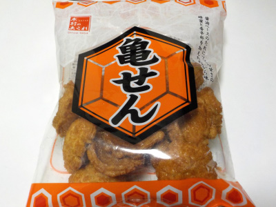

「木村のあられ」の亀せん
2023/01/11

お米じゃなくて小麦でできたお菓子です。九州にはこの「亀せん」という商品が色々あるみたいです。
表面がコンガリとした焼き色になっているので濃い味で固いかと思ったんですが、食べてみると薄味で軽くてサクサクしてました。
見た目が揚げせんべいに似ていますが、小麦粉なので味が違っていました。
スナック菓子な感じがするので、おやつに丁度いいと思いました。
熊本県熊本市南区流通団地2-5
2023/01/11

お米じゃなくて小麦でできたお菓子です。九州にはこの「亀せん」という商品が色々あるみたいです。
表面がコンガリとした焼き色になっているので濃い味で固いかと思ったんですが、食べてみると薄味で軽くてサクサクしてました。
見た目が揚げせんべいに似ていますが、小麦粉なので味が違っていました。
スナック菓子な感じがするので、おやつに丁度いいと思いました。